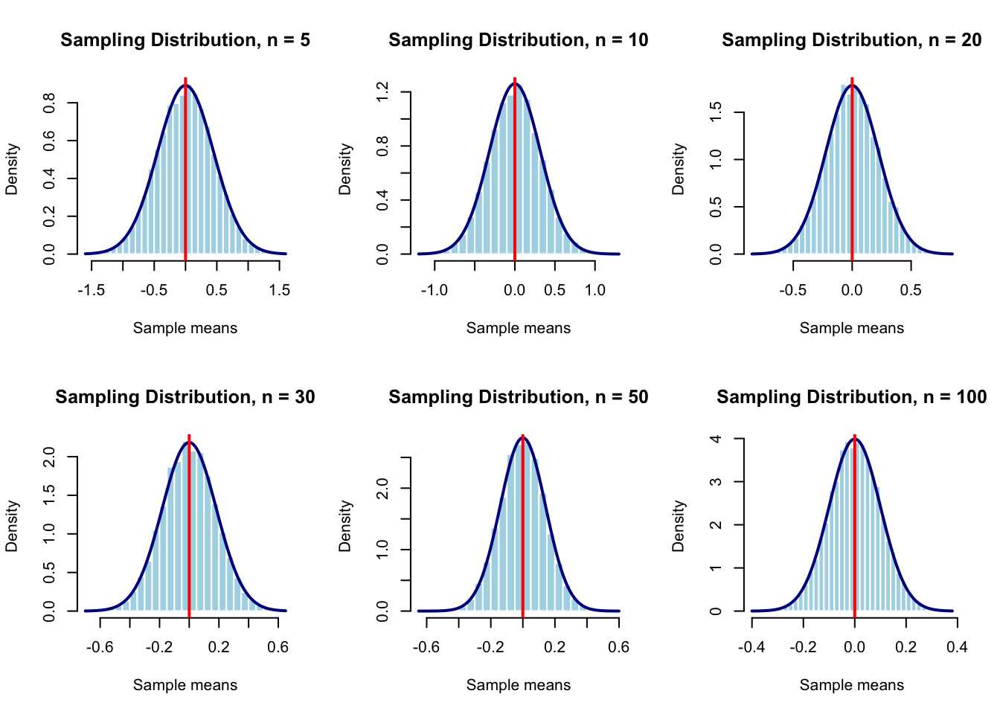
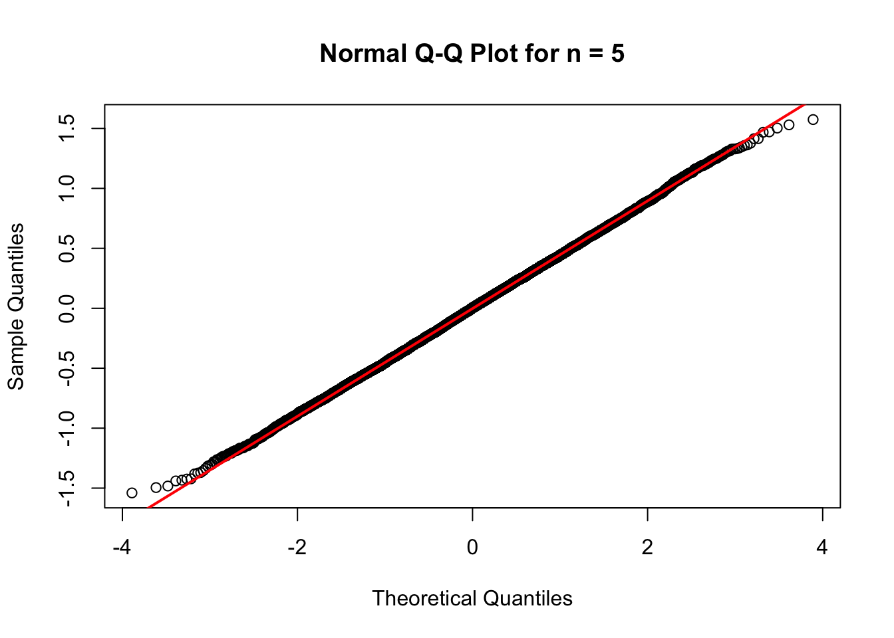

sample_sizes <- c(5, 10, 20, 30, 50, 100)
B <- 10000Standard Normal Distribution
1 1. Population Description
The first distribution we will evaluate is the standard normal distribution. It is a continuous, symmetric, bell-shaped distribution with a theoretical mean of 0 and a theoretical standard deviation of 1. Its skewness is 0, and it is not heavy-tailed. The simulated observations are independent and identically distributed. In R, this distribution can be generated using the rnorm() function.
2 2. Prediction Before the Simulation
Before running the simulation, I predict that the sampling distribution of the mean will be approximately normal even for a relatively small sample size. I expect this because the original population is already normally distributed.
I also predict that the sample means will be centered near the theoretical population mean of 0. As the sample size increases, I expect the sample means to show less variation because the standard error decreases as the sample size increases.
The theoretical standard error is:
\[SE(\bar X)=\frac{\sigma}{\sqrt{n}}.\]
For the standard normal population, (), so:
\[SE(\bar X)=\frac{1}{\sqrt{n}}.\]
3 3. Simulation Design
3.1 Sample Sizes
I will investigate the sample sizes (n=5), (n=10), (n=20), (n=30), (n=50), and (n=100).
These sample sizes allow me to compare small, medium, and larger samples. They will show whether the sampling distribution is already approximately normal at a small sample size and how its spread changes as (n) increases.
3.2 Number of Simulations
For each sample size, I will generate 10,000 repeated samples. Each repeated sample will produce one sample mean.
The sample size (n) refers to the number of observations within one sample. The number of simulations, (B), refers to how many samples are repeatedly generated. These are different quantities.
3.3 Reproducibility
I used the last four digits of my student ID as the random seed so that the simulation results can be reproduced.
student_id <- 6424
set.seed(student_id)4 4. Simulation Function
The following function repeatedly samples from the standard normal population and calculates the mean of each sample.
simulate_normal_means <- function(n, B = 10000) {
replicate(
B,
mean(rnorm(n, mean = 0, sd = 1))
)
}4.1 Testing the Function
I first tested the function using a sample size of (n=5).
test_sample_means_n5 <- simulate_normal_means(
n = 5,
B = B
)
head(test_sample_means_n5)[1] -0.6185686 0.9077972 -0.2483569 -0.3576512 -0.3084207 0.5980243length(test_sample_means_n5)[1] 10000The function produced 10,000 sample means, confirming that it worked correctly.
5 5. Simulation Results
5.1 5.1 Generating Sample Means for Each Sample Size
I used the simulation function to generate 10,000 sample means for each selected sample size.
all_sample_means <- lapply(
sample_sizes,
function(n) {
simulate_normal_means(
n = n,
B = B
)
}
)
names(all_sample_means) <- paste0("n_", sample_sizes)
sample_means_n5 <- all_sample_means[["n_5"]]Each element of all_sample_means contains 10,000 sample means for one sample size.
I checked that every sample size produced 10,000 sample means:
sapply(all_sample_means, length) n_5 n_10 n_20 n_30 n_50 n_100
10000 10000 10000 10000 10000 10000 5.2 5.2 Comparison of Histograms Across Sample Sizes
To compare the sampling distributions across all investigated sample sizes, I created six histograms. Each histogram shows the sampling distribution of the mean for a different sample size.
old_par <- par(mfrow = c(2, 3))
for (n in sample_sizes) {
x <- all_sample_means[[paste0("n_", n)]]
hist(
x,
breaks = 30,
probability = TRUE,
main = paste("Sampling Distribution, n =", n),
xlab = "Sample means",
col = "lightblue",
border = "white"
)
curve(
dnorm(x, mean = 0, sd = 1 / sqrt(n)),
add = TRUE,
col = "darkblue",
lwd = 2
)
abline(
v = 0,
col = "red",
lwd = 2
)
}
par(old_par)The blue curve represents the theoretical normal distribution expected for the sample means. The red line marks the theoretical mean of 0.
5.3 5.3 Normal Q–Q Plot for (n=5)
A normal Q–Q plot provides another way to evaluate whether the sampling distribution is approximately normal.
qqnorm(
sample_means_n5,
main = "Normal Q-Q Plot for n = 5"
)
qqline(
sample_means_n5,
col = "red",
lwd = 2
)
Points that follow the red line closely provide evidence that the sampling distribution is approximately normal.
5.4 5.4 Numerical Evidence for (n=5)
The following calculations compare the simulated results with theoretical values.
simulated_mean_n5 <- mean(sample_means_n5)
simulated_se_n5 <- sd(sample_means_n5)
theoretical_mean_n5 <- 0
theoretical_se_n5 <- 1 / sqrt(5)
numerical_evidence_n5 <- data.frame(
sample_size = 5,
theoretical_mean = theoretical_mean_n5,
simulated_mean = simulated_mean_n5,
simulated_standard_error = simulated_se_n5,
theoretical_standard_error = theoretical_se_n5
)
numerical_evidence_n5 sample_size theoretical_mean simulated_mean simulated_standard_error
1 5 0 -0.0008814583 0.4457232
theoretical_standard_error
1 0.44721365.5 5.5 Skewness and Kurtosis for (n=5)
I calculated skewness and excess kurtosis to provide additional numerical evidence about whether the sampling distribution is approximately normal.
skewness_n5 <- mean(
(sample_means_n5 - mean(sample_means_n5))^3
) / sd(sample_means_n5)^3
excess_kurtosis_n5 <- mean(
(sample_means_n5 - mean(sample_means_n5))^4
) / sd(sample_means_n5)^4 - 3
data.frame(
sample_size = 5,
skewness = skewness_n5,
excess_kurtosis = excess_kurtosis_n5
) sample_size skewness excess_kurtosis
1 5 0.01623949 -0.0597605For an approximately normal distribution, skewness and excess kurtosis should both be close to 0.
5.6 5.6 Numerical Summary Across All Sample Sizes
The following table summarizes the simulation results for every sample size investigated.
summary_table <- do.call(
rbind,
lapply(sample_sizes, function(n) {
x <- all_sample_means[[paste0("n_", n)]]
data.frame(
sample_size = n,
theoretical_mean = 0,
simulated_mean = mean(x),
simulated_standard_error = sd(x),
theoretical_standard_error = 1 / sqrt(n),
skewness = mean(
(x - mean(x))^3
) / sd(x)^3,
excess_kurtosis = mean(
(x - mean(x))^4
) / sd(x)^4 - 3
)
})
)
summary_table sample_size theoretical_mean simulated_mean simulated_standard_error
1 5 0 -0.0008814583 0.44572322
2 10 0 0.0047538088 0.31744688
3 20 0 0.0017784488 0.22309626
4 30 0 0.0001237638 0.18077787
5 50 0 -0.0013246412 0.14035303
6 100 0 0.0012332596 0.09888489
theoretical_standard_error skewness excess_kurtosis
1 0.4472136 0.0162394882 -0.05976050
2 0.3162278 0.0280967793 -0.06483212
3 0.2236068 -0.0092970970 -0.04129938
4 0.1825742 0.0029661718 -0.00868009
5 0.1414214 0.0086741666 -0.01948387
6 0.1000000 -0.0002192906 0.01043544This table compares the theoretical mean with the simulated mean, the simulated standard error with the theoretical standard error, and skewness and excess kurtosis across sample sizes.
6 6. When Did the Sampling Distribution Become Approximately Normal?
Based on the histogram comparison, the normal Q–Q plot for (n=5), and the numerical summary table, the sampling distribution of the mean was approximately normal at the smallest sample size investigated.
The histogram for (n=5) was roughly symmetric and bell-shaped. The Q–Q plot showed that the points followed the reference line reasonably well. The simulated mean was close to 0, the simulated standard error was close to the theoretical standard error, and both skewness and excess kurtosis were close to 0.
Therefore, (n=5) was the smallest sample size investigated at which the sampling distribution appeared approximately normal.
\[\boxed{n=5}\]
7 7. Why Did I Choose That Value?
I chose (n=5) because it was the smallest sample size investigated and already produced an approximately normal sampling distribution.
The histogram was roughly bell-shaped, and the Q–Q plot followed the reference line. The simulated mean was close to the theoretical mean of 0, and the simulated standard error was close to the theoretical standard error. Skewness and excess kurtosis were also close to 0.
8 8. What Surprised Me?
Although I expected the sampling distribution to be approximately normal, I was surprised by how closely the simulated results matched the theoretical results. For example, when (n=5), the simulated standard error was close to the theoretical value.
9 9. Conclusion
For the Standard Normal population, the sampling distribution of the mean was approximately normal at the smallest sample size investigated, (n=5). The histograms, Q–Q plot, and numerical results supported this conclusion. This demonstrates that sample means from an already normal population can be approximately normal even with relatively small samples.